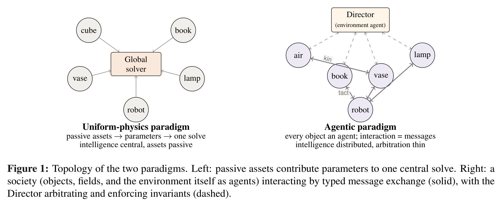
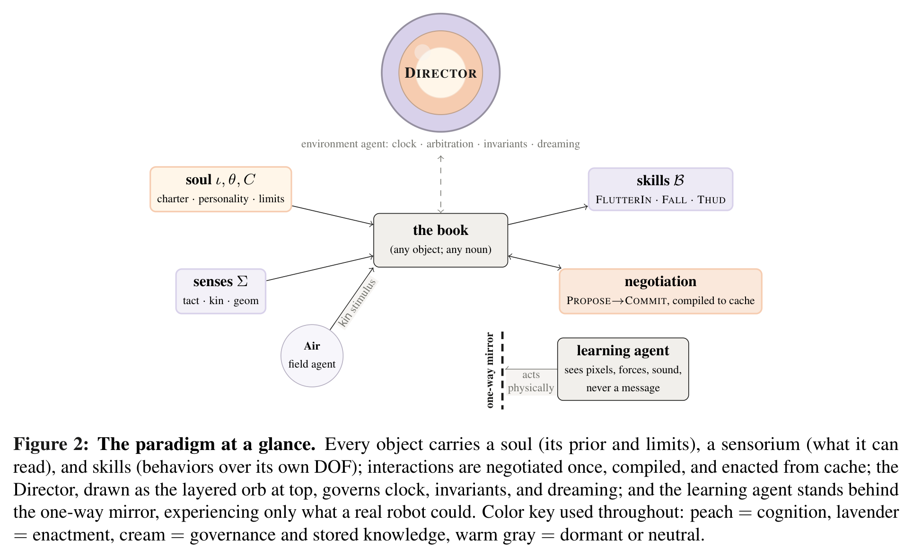
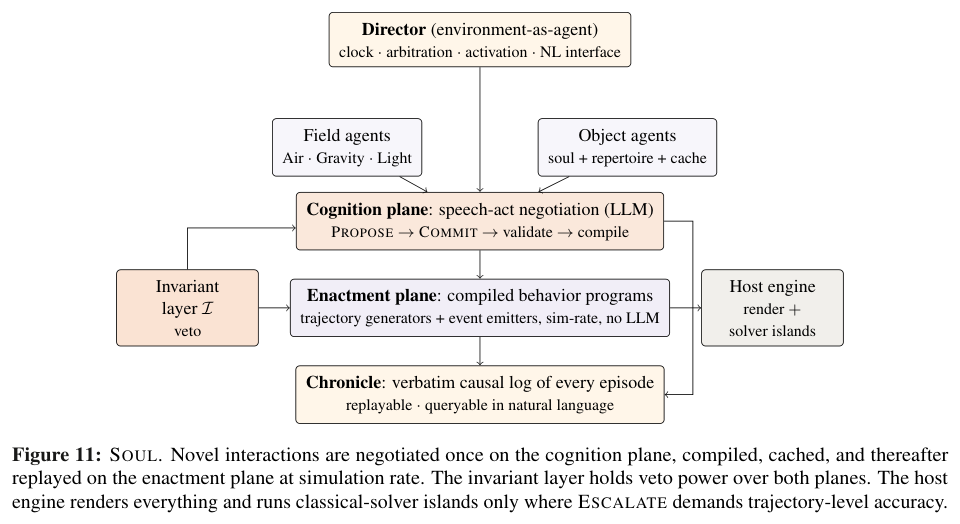
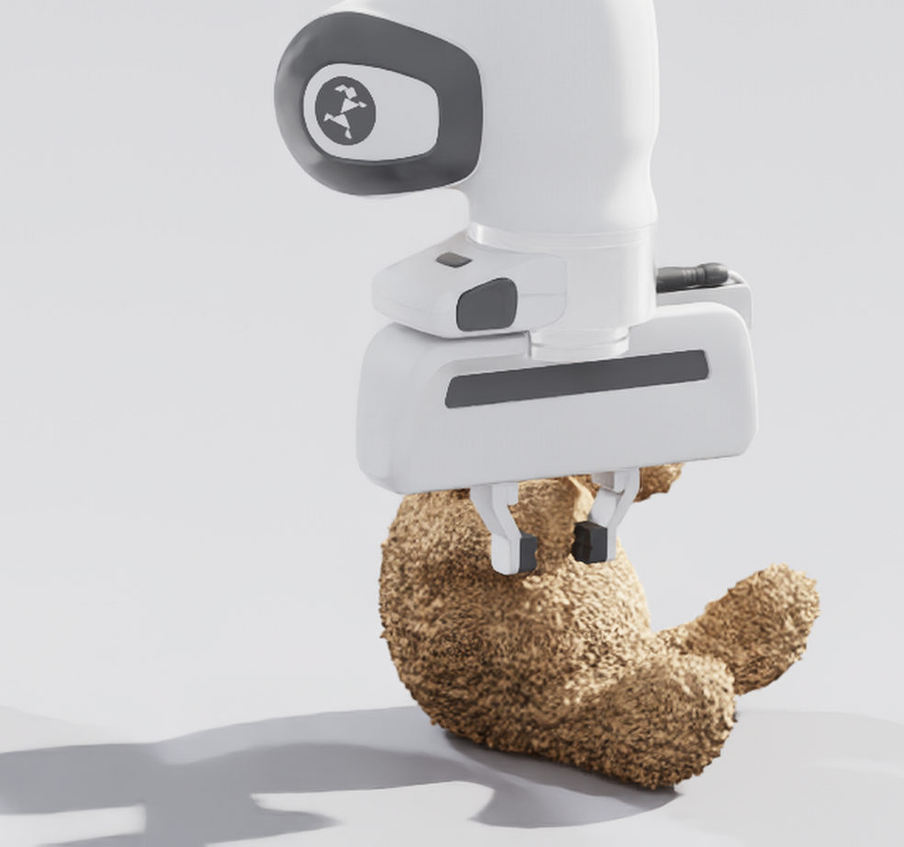

A position paper and architecture for agentic simulation: an ontology, the SOUL reference system, measured reference clips from the physical world, and a pre-registered evaluation program with stated falsification criteria for each thesis.
Open Isaac Sim, MuJoCo, Unity, or Unreal and import a cube. The workflow has been stable for decades. The cube receives mass, friction, restitution, roughness, luminosity. Those scalars are handed to one global solver that applies uniform physics to every body it steps. Interaction is whatever falls out of the solve. The object contributes parameters. Consequences are derived centrally.
That stack is a genuine achievement. Our question is architectural only: must all understanding of behavior live in one central solver, or can it be distributed across coordinated agents, one per object, each responsible for its own?
Under the agentic ontology, a book is not a mesh with a mass. It is an agent that knows how to be a book: rest, open, flutter in wind, fall, thud, settle. A vase knows how flowers ruffle as air speed rises. A sanitizer bottle knows that a press on its cap dispenses a small, slightly variable volume with a pump click. A lamp knows its switch. None of these facts need to be consequences of a global solve. They are behaviors: entries in a charter, enacted on demand, negotiated in context.
Two paradigms
The paper contrasts the uniform-physics paradigm with an agentic one. On the left, passive assets feed a global solver. On the right, objects, fields, and the environment itself are agents that exchange typed messages, with a Director arbitrating thinly.
Diagram
Topology of the two paradigms
Uniform physics
Passive assets contribute parameters to one central solve. Intelligence is central. Assets are passive.
Agentic
Every object is an agent. Interaction is message exchange. The Director arbitrates and enforces invariants.

Three theses
The argument rests on three claims. Each is paired with a named experiment in the evaluation program that can falsify it.
Thesis 01
Behavioral sufficiency
For robot learning, the fidelity target is a distribution over task-relevant behavior, not a petal-exact trajectory. The flowers must ruffle; fine-grained petal paths are not required.
Thesis 02
Language as medium
Speech-act protocols finally have interlocutors that understand. Agents propose, commit, and negotiate interaction semantics in natural language grounded by soul files.
Thesis 03
Societies scale
Solvers grow with every awake body. Societies escape through locality and amortization: negotiate once, then replay from cache as novelty decays.
Soul, senses, skills
The ontology’s triad is simple. Every object has a soul (a natural-language charter of identity, personality, repertoire, and limits), senses (a sensorium in its own form), and skills (behaviors over its own degrees of freedom). An object with all three is, functionally, a robot.
Soul
A versioned charter: what the object is, what it can do, and within what physical limits. Authorable in natural language rather than through solver-parameter search.
Senses
Not every agent needs eyes. The bottle reads pressure on its pump. The lamp reads its switch. Delivery is filtered by what the sensorium can receive.
Skills
Named, parameterized stochastic behaviors. Flutter, dispense, toggle, ruffle, thud. Sampled from distributions, compiled after negotiation.

Negotiate once, enact forever
Language is the compiler of the world’s dynamics, not its interpreter at every timestep. Novel interactions are negotiated on a slow cognition plane, then compiled into cheap stochastic processes on a fast enactment plane. As the interaction cache fills, language-model invocations per simulated second decay toward zero.
Cognition plane
Speech-act negotiation with an LLM. PROPOSE, COMMIT, validate, compile. Rare, expensive, and reusable.
Enactment plane
Cached behavior programs at simulation rate. Trajectory generators and event emitters. No language model on the hot path.

The one-way mirror
The robot being trained is an agent in the world, but not a member of its backstage. It perceives rendered pixels, depth, proprioception, and contact forces. It never reads souls or messages. The message plane has no counterpart in reality. A policy that conditioned on it would break at deployment. Isolation is architectural.
Backstage
Souls, speech acts, negotiation, Chronicle, Director arbitration. Visible to experimenters and to object agents. Invisible to the learner.
Learning agent
Sees only what a real robot could see. Acts only through actuators. Privileged curriculum guidance, if used, is distilled away before deployment.
What the footage says
Part II of the paper works ordinary household objects as case studies: sanitizer bottle, table lamp, flower vase, cabinet drawer, deformable teddy bear, and cloth. Measured clips fix reference behaviors the system must reproduce. Authored souls and negotiations show how those behaviors are declared. No result about the built system is claimed as a benchmark.
Measured sanitizer actuation sequence from the paper’s case studies. Behavior is compact: press, dispense, click, recover.
Table lamp
Switch toggles luminous state. The light field agent responds. A simple discrete mode with graded appearance.
Flower vase
Wind proposes. The vase commits to a graded ruffle. Petal-exact trajectories are refused as the fidelity target.
Cabinet drawer
Stick, slide, stop. Behavior that today requires solver-parameter search becomes a paragraph in a soul.

Deformables
Teddy and cloth mark the hard boundary: escalate to classical solvers where task reward depends on dense contact.
A single escalation rule
Trajectory-level physics is not retired. It becomes a budgeted resource. Ambient content can run hot: any plausible ruffle is a correct ruffle. Task-critical contact runs cold. Escalation collapses the distribution to a solver island for the duration of criticality. Physics where it matters. Behavior everywhere else.
Evaluation program
Every thesis has pre-registered success targets and falsification criteria. The Ruffle Test asks whether agentic worlds are indistinguishable in distribution from real or solver references at behavior level. Authoring, amortization, transfer, grounding, and openness are specified the same way.
Evaluation
Program at a glance
| Test | Targets | Falsification |
|---|---|---|
| E1 Ruffle Test | Behavioral sufficiency | Reliable detection; discriminators fail to stay near chance |
| E2 Authoring | Editability in few turns | Parity with expert parameter tuning |
| E3 Amortization | LLM cost decays with cache | Sustained cognition cost or rising artifacts |
| E4 Transfer | Policies trained in agentic worlds | Systematic deficit versus solver baselines |
| E6 Grounding | Souls as priors pinned by footage | Grounded models no better than prior out of sample |
Scope of the claim
We do not claim language-mediated behavior matches solver physics at trajectory level. We claim that at behavior level, agentic worlds can be made indistinguishable in distribution for broad classes of everyday interaction; that policies trained in such worlds can transfer no worse where behavioral richness matters; and that the cost of a populated, authored world falls as negotiation amortizes into playback.
The document is organized so it need not be read in full: Part I is the argument, Part II the case studies and measurements, Part III the buildable specification, Part IV the extended discussion. The work is a specified research program in service of a simple view of the field: embodied intelligence should understand, and stay safe around, the people it works beside.